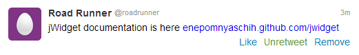
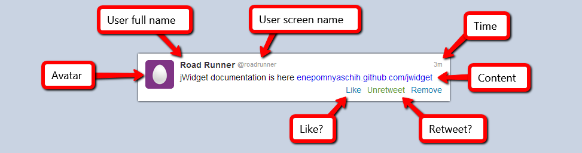
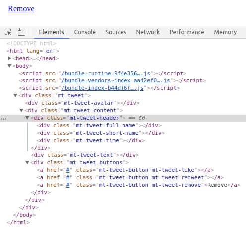
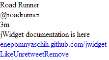

Source: https://github.com/enepomnyaschih/mt/tree/mt-2.2-1 (Git branch).
This tutorial shows you a way to develop your own Twitter in several steps using jWidget 2 and TypeScript.
If you want to learn how to develop powerful Model-View-applications with jWidget 2, please follow these steps accurately in the same order. If motivation of some action is unclear for you, then probably we'll explain it at the next steps. Please don't deviate from this strategy yet.
In the first sample we take a look at model and view. We will develop a simple UI component which takes data from a model to render itself.
First, download jWidget 2 project template. The template gives you a good starting point. Now you don't need to bother about the environment configuration process. Just extract the template to some folder at your disk and run:
npm install npm start
These commands install the dependencies, create "public" folder with the compiled application files and start watching the source files for any modifications. You need to serve "public" folder via some Web server, for example (run in a separate terminal):
npm install -g serve serve public
This command will display the URL of the served files. Open it in your browser. It should display "Hello, World!" message.
Now we are ready to depelop the application. Download profile avatar files avatar-32.png and avatar-48.png to "static/backend" folder.
Our goal is to implement a component for tweet representation:
Let's find out, what data we have here, i.e. what can be different for a couple of different tweets:
Let's define an interface storing this data, i.e. tweet model:
export default interface Tweet {
readonly fullName: string;
readonly shortName: string;
readonly avatarUrl48: string;
readonly contentHtml: string;
readonly time: number;
readonly like: boolean;
readonly retweet: boolean;
}
export function createTweetByJson(json: any): Tweet {
return {
...json,
time: new Date().getTime() - json["timeAgo"]
};
}
Model development is finished, so let's implement a view. Define TweetView component as follows:
import Component from "jwidget/Component"; import template from "jwidget/template"; import Tweet from "../model/Tweet"; @template(require<string>("./TweetView.jw.html")) export default class TweetView extends Component { constructor(_tweet: Tweet) { super(); } }
Next, we need to bind an HTML template to this component. It should be defined in a separate file:
<div jwclass="mt-tweet">
<div jwid="avatar"></div>
<div jwid="content">
<div jwid="header">
<div jwid="full-name"></div>
<div jwid="short-name"></div>
<div jwid="time"></div>
</div>
<div jwid="text"></div>
<div jwid="buttons">
<a jwid="button like" href="#"></a>
<a jwid="button retweet" href="#"></a>
<a jwid="button remove" href="#">Remove</a>
</div>
</div>
</div>
This is usual HTML except one thing: special attributes "jwclass" and "jwid". "jwclass" is a root CSS-class of the component, and the prefix for all elements which have "jwid" defined. CSS-class of each element with "jwid" will be <jwclass>-<jwid>. So, the template above will expand to the next HTML:
<div class="mt-tweet">
<div class="mt-tweet-avatar"></div>
<div class="mt-tweet-content">
<div class="mt-tweet-header">
<div class="mt-tweet-full-name"></div>
<div class="mt-tweet-short-name"></div>
<div class="mt-tweet-time"></div>
</div>
<div class="mt-tweet-text"></div>
<div class="mt-tweet-buttons">
<a class="mt-tweet-button mt-tweet-like" href="#"></a>
<a class="mt-tweet-button mt-tweet-retweet" href="#"></a>
<a class="mt-tweet-button mt-tweet-remove" href="#">Remove</a>
</div>
</div>
</div>
Presence of a common prefix mt-tweet- in all elements simplifies component slicing via various CSS-preprocessors like Sass, LESS and Stylus.
It is time to run our application. To do it, we need testing data and a main entry point. Let's define them in index.ts file.
import "core-js/stable";
import "regenerator-runtime/runtime";
import "./index.styl";
import $ from "jquery";
import {createTweetByJson} from "./model/Tweet";
import TweetView from "./view/TweetView";
$(function () {
const tweet = createTweetByJson({
"fullName": "Road Runner",
"shortName": "roadrunner",
"avatarUrl48": "backend/avatar-48.png",
"contentHtml": "jWidget documentation is here <a href=\"https://enepomnyaschih.github.com/jwidget\" target=\"_blank\">enepomnyaschih.github.com/jwidget</a>",
"timeAgo": 215000,
"like": false,
"retweet": true
});
new TweetView(tweet).renderTo("body");
});
The first two imports are mandatory for jWidget, because the framework depends on some edge EcmaScript features, and these polyfills make sure that these features are available in all popular browsers. The third import attaches all stylesheets in a preferred order as listed in index.styl file. The stylesheets are written in Stylus syntax.
Make sure that WebPack (running under "npm start") doesn't display any errors and refresh the browser page. You'll see something like this:
As you can see, our component has a structure but doesn't have any data. Let's bind the component elements to the data. jWidget framework doesn't provide any magic HTML syntax for this. So, we won't change the template, but we'll add some TypeScript code. The real tool that jWidget provides for us is direct and fast access to jQuery-wrappers over all HTML elements having "jwid" attribute defined. You can access these elements inside method afterRender via method getElement:
import Component from "jwidget/Component"; import template from "jwidget/template"; import Tweet from "../model/Tweet"; @template(require<string>("./TweetView.jw.html")) export default class TweetView extends Component { constructor(private tweet: Tweet) { super(); } protected afterRender() { super.afterRender(); this.getElement("avatar").css("background-image", `url(${this.tweet.avatarUrl48})`); const timeAgo = new Date().getTime() - this.tweet.time; const text = this._getTimeString(timeAgo); this.getElement("time").text(text); this.getElement("full-name").text(this.tweet.fullName); this.getElement("short-name").text("@" + this.tweet.shortName); this.getElement("text").html(this.tweet.contentHtml); this.getElement("like").toggleClass("active", this.tweet.like).text(this.tweet.like ? "Unlike" : "Like"); this.getElement("retweet").toggleClass("active", this.tweet.retweet).text(this.tweet.retweet ? "Unretweet" : "Retweet"); } private _getTimeString(timeAgo: number) { const minutes = timeAgo / 60000; if (minutes < 1) { return "Just now"; } if (minutes < 60) { return Math.floor(minutes) + "m"; } const hours = minutes / 60; if (hours < 24) { return Math.round(hours) + "h"; } function pad(value: number): string { return (value < 10) ? ("0" + value) : String(value); } const date = new Date(new Date().getTime() - timeAgo); return date.getDate() + "." + pad(date.getMonth()); } }
Result:
Works well, but looks poorly. Let's demonstrate the magic of slicing. I prefer Stylus for this purpose, and its interpreter is already configured in jWidget project template.
.mt-tweet
background #fff
border-top 1px solid #e8e8e8
box-sizing border-box
font-family Arial,sans-serif
font-size 14px
overflow hidden
padding 12px
width 520px
&:hover
background #f5f5f5
&-full-name
color #333
font-family Arial, sans-serif
font-size 14px
font-weight bold
text-shadow 0 1px 0 #fff
&-short-name
&-time
color #999
font-family Arial, sans-serif
font-size 11px
text-shadow 0 1px 0 #fff
&-avatar
background transparent none no-repeat 0 0
border-radius 5px
float left
margin-right 10px
width 48px
height 48px
&-content
float left
width 438px
&-header
overflow hidden
&-full-name
float left
margin-right 4px
&-short-name
float left
&-time
float right
&-text
padding 5px 0
&-buttons
text-align right
&-button
color #0084b4
cursor pointer
display inline-block
&-like
&-retweet
margin-right 10px
&-like.active
color #ff9b00
&-retweet.active
color #609928
Add this Stylus file into index.styl:
// All Stylus files should be imported here in the preferred order @import "view/TweetView"
As result, we'll see what we wanted to:
Let's review one more thing. We can write JS code of the component in a different way. Instead of accessing the elements via getElement method, let's just define methods render<ChildId>, where <ChildId> is "jwid" of an element written in CapitalizedCamelCase:
import Component from "jwidget/Component"; import template from "jwidget/template"; import Tweet from "../model/Tweet"; @template(require<string>("./TweetView.jw.html")) export default class TweetView extends Component { constructor(private tweet: Tweet) { super(); } protected renderAvatar(el: JQuery) { el.css("background-image", `url(${this.tweet.avatarUrl48})`); } protected renderTime(el: JQuery) { const timeAgo = new Date().getTime() - this.tweet.time; const text = this._getTimeString(timeAgo); el.text(text); } protected renderFullName(el: JQuery) { el.text(this.tweet.fullName); } protected renderShortName(el: JQuery) { el.text("@" + this.tweet.shortName); } protected renderText(el: JQuery) { el.html(this.tweet.contentHtml); } protected renderLike(el: JQuery) { el.toggleClass("active", this.tweet.like).text(this.tweet.like ? "Unlike" : "Like"); } protected renderRetweet(el: JQuery) { el.toggleClass("active", this.tweet.retweet).text(this.tweet.retweet ? "Unretweet" : "Retweet"); } private _getTimeString(timeAgo: number) { const minutes = timeAgo / 60000; if (minutes < 1) { return "Just now"; } if (minutes < 60) { return Math.floor(minutes) + "m"; } const hours = minutes / 60; if (hours < 24) { return Math.round(hours) + "h"; } function pad(value: number): string { return (value < 10) ? ("0" + value) : String(value); } const date = new Date(new Date().getTime() - timeAgo); return date.getDate() + "." + pad(date.getMonth()); } }
This code is equivalent to the original one. There is slightly more code, but it became more readable. Each specific element is rendered with its own method. You can use one way or another. I prefer second way because it is more flexible: you can override any element rendering in an inherited component class. Let's stick to this way in future samples.
Since we used a template to initialize the project, it makes sense to do some cleanup now. Delete the following unused files:
Also, following the README instructions:
Once it is done, feel free to do your first commit to a source code repository.
Tutorial. Part 2. Child component collections